Positive Train Control and Signal Systems
Caltrain
at RSE, Inc.
The Rail Safety Improvement Act of 2008 mandated the use of PTC (positive train control) technology to prevent accidents on US railroads. In September 2019, Caltrain began the Revenue Service Demonstration phase, operating PTC on regular passenger trains, on the San Francisco Peninsula. PTC interoperability work continues with the adjacent Union Pacific, Altamont Corridor Express, and Amtrak railways.
Year ▸ 2019-2021
Signals and Crossings
▸ Updated signal diagram drawings systemwide
▸ Worked with client in conjunction with the upcoming track and train electrification, positive train control, and ongoing construction projects
▸ Assigned tasks to other engineers as needed
"I-EMTS" PTC System
▸ Represented client as a witness and test engineer during contractor field equipment verification
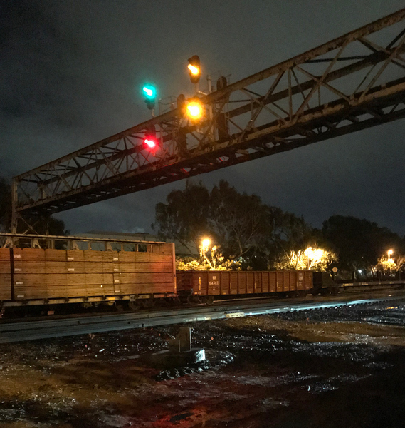
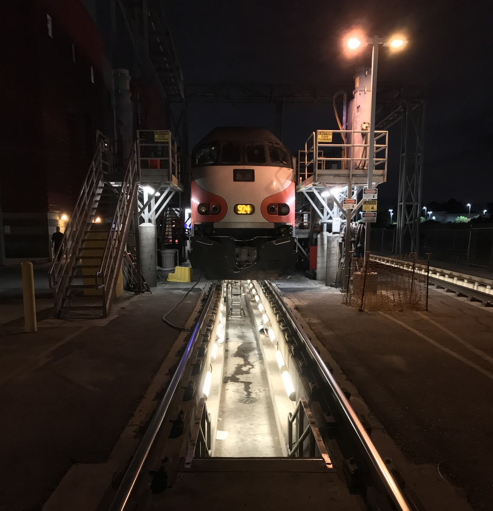
Automotive Filtration Systems
Filtran
Filtran is a leading global supplier of automatic transmission filtration solutions to automotive OEM's and the automotive aftermarket. Filtran is ISO-9000, ISO-14001, & TS-16949 certified.
Year ▸ 2016
Responsibilities
▸ Designed conceptual transmission fluid filters for major auto manufacturing clients, including an exclusivity contract with Ford Motor Company
▸ Redesigned testing equipment and shortened turnaround times of QA department's performance qualification and vibration tests


Prototype Low-Cost Motorized Peeler
Trees That Feed Foundation
with Northwestern University
A common sight in Jamaica and Haiti, breadfruit can potentially strengthen food security and entrepreneurial ventures on the island. The Trees That Feed Foundation aims to improve the throughput of breadfruit processing, which involves peeling, shredding, drying, and packaging.
The "Bolt", our motorized prototype peeler, removes the breadfruit's sticky, rough skin in as little as 10 seconds compared to up to a minute with hand-peeling. For material selection and complexity of assembly, local manufacturing and supply costs as well as an alternative manual operation feature were taken into consideration.
Year ▸ 2016
Lead
▸ Mockup builds, computer modeling design and file management, material procurement, and construction of a prototype deliverable to the client and end users
Contributor
▸ User interviews, user testing and performance testing
Also... We were featured in Northwestern Ideas: Breadfruit Peeler.
For more on breadfruit's role in a changing world, refer to an August 2022 study between the university and the Chicago Botanic Garden.
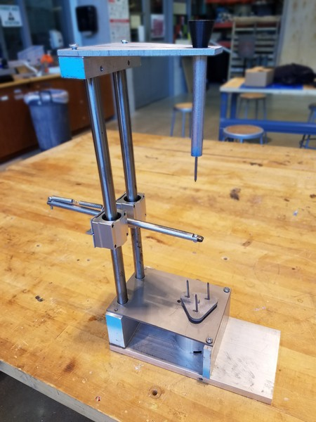


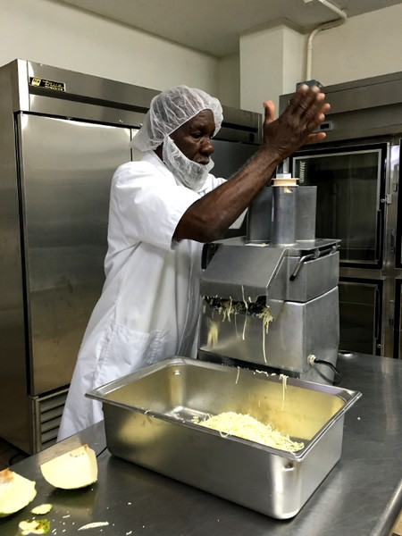
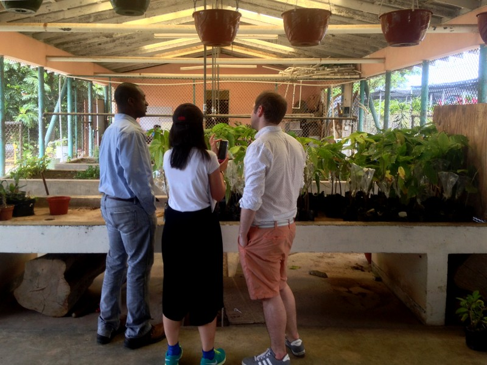
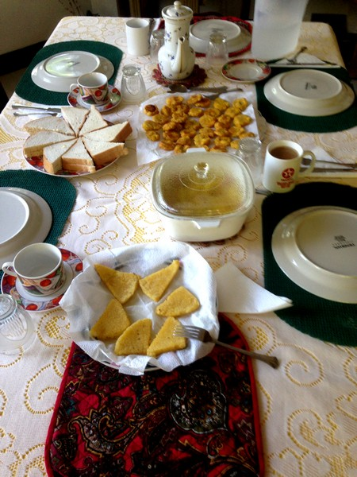

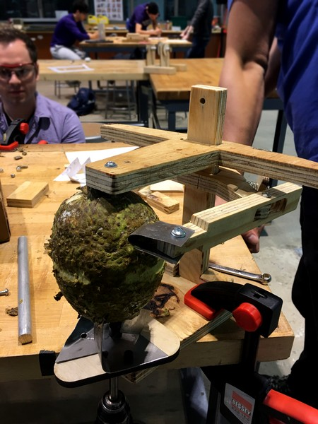

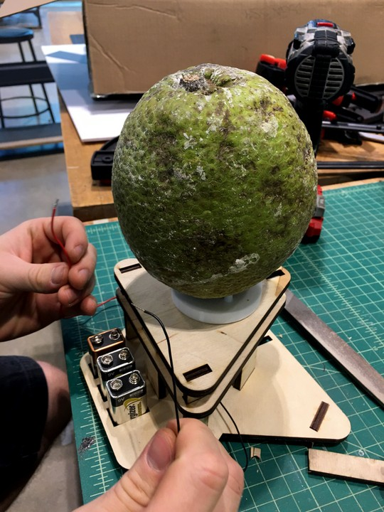
Redesigned Floor Outlet Covers
Segal Design Institute
at Northwestern University
At the time, the Segal building was approaching its 10th year of operation. One of the signs of age were the worn-out and broken floor power outlet covers, part of a more unusual below-floor utilities design meant for more flexible classroom layouts and efficient HVAC. As a first step, the school procured some in-house solutions.
Year ▸ 2015
Lead ▸ Ideation, product design, materials selection and prototype building
Contributor ▸ User interviews, user testing and performance testing
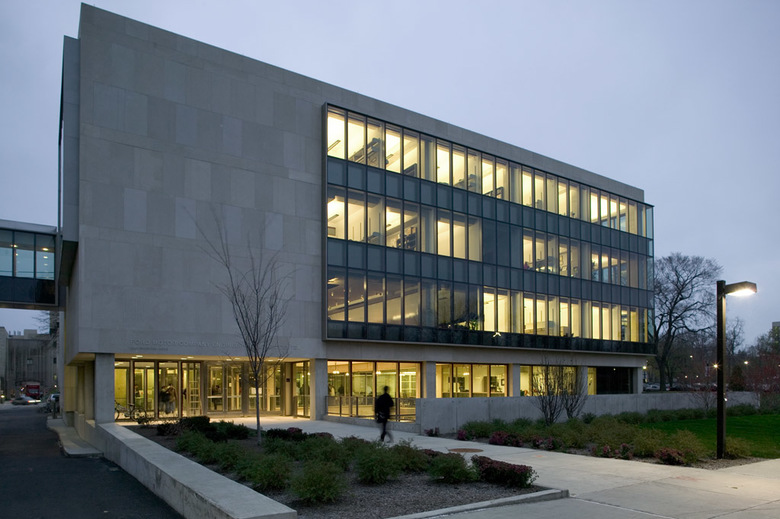
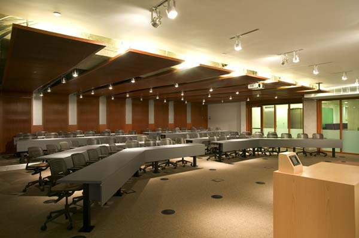


Infant Surgery Warming Pad Prototype
Segal Design Institute & University of Ibadan
In Lagos, Nigeria, some infants are unable to undergo gastrointestinal surgery in a timely fashion due to financial and infrastructural complications. To address this need, doctors at the University of Ibadan are looking into alternatives to high-end operating room equipment. One particular concern was high heat loss from the patient's body during an operation, with practical or inexpensive solutions few to none.
The prototype Infant Warming Pad is a low-cost, mass-manufacturable, and sanitary closed-system bed that maintains an infant's body temperature with convective heat during surgery.
Year ▸ 2015
Lead ▸ Power supply unit designing and building
Contributor ▸ Hardware manufacturing & assembly, quality verification


Computer-Aided Manufactured Toy
CPS STEM Outreach Program
with Northwestern University
As part of a Chicago Public Schools STEM outreach program to promote engineering, a group of fourth graders tasked us with toys to manufacture using polypropylene. Applying our knowledge of color mixing and part size in an injection mold process, our team separated one toy, a "candy sombrero" figure, into three parts for assembly: the sombrero, the main body, and the mustache.
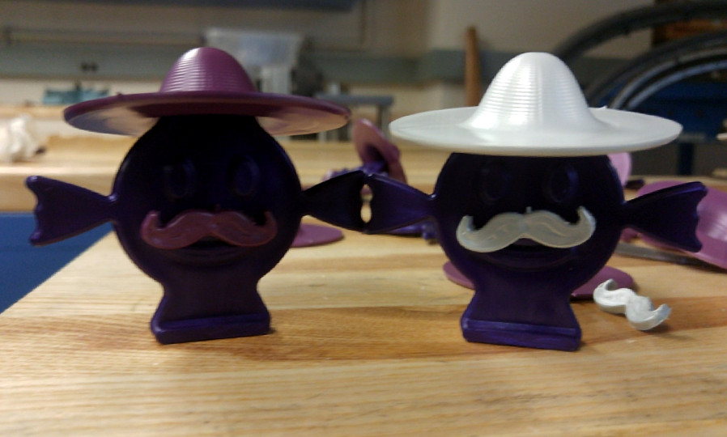
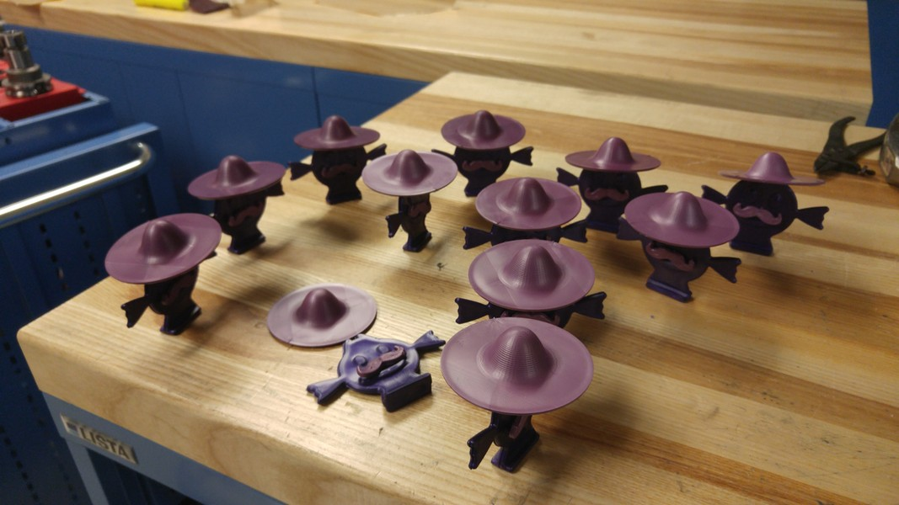
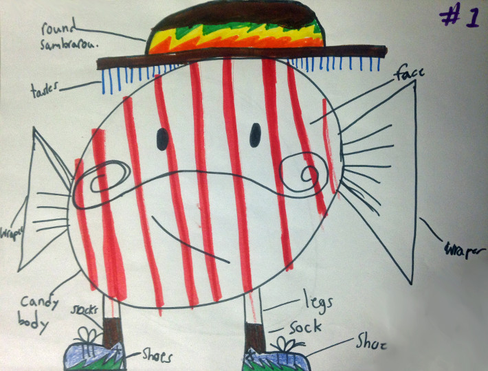
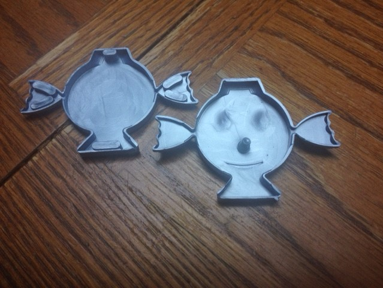
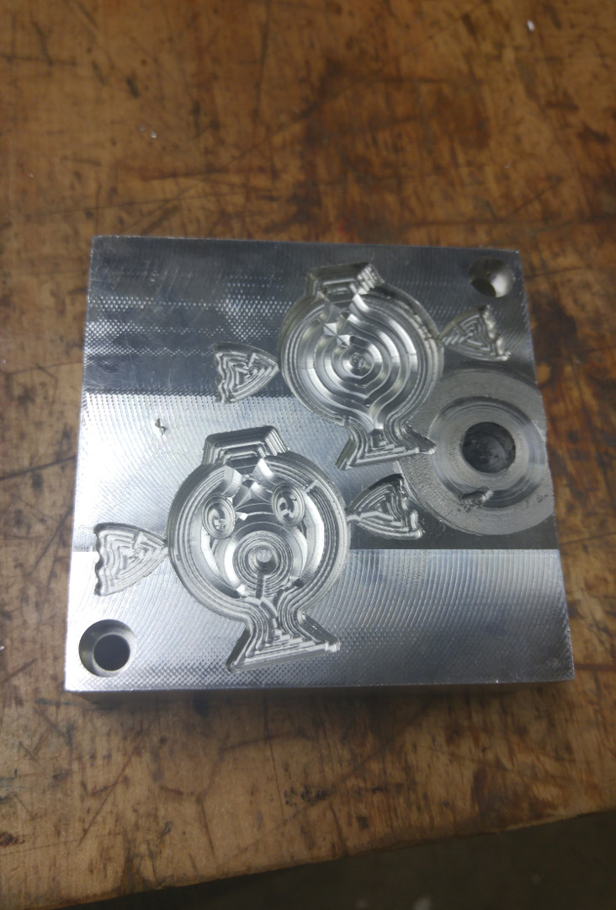
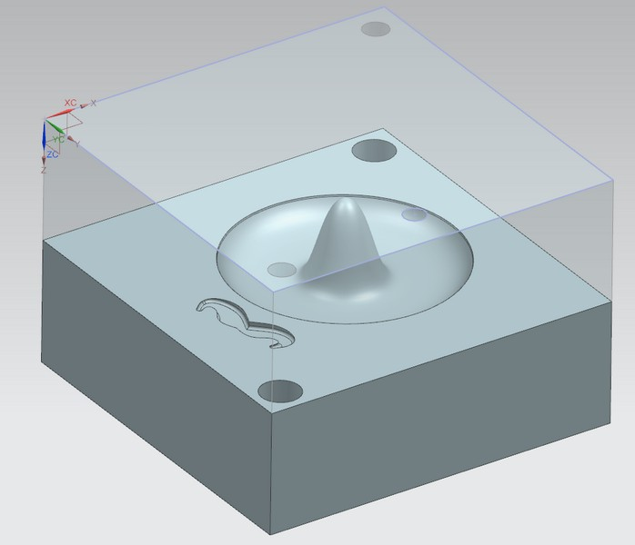
Quality-of-Life Kitchen Product
Northwestern University
The Clip-It prevents a trash bag from falling into a trash can, which dirties the can and complicates usage. It was developed using the human-centered design approach: user research testing, patent research, establishment of a white space, and an iterative design process. Prototypes were fabricated using 3D printing and fused deposition modeling.

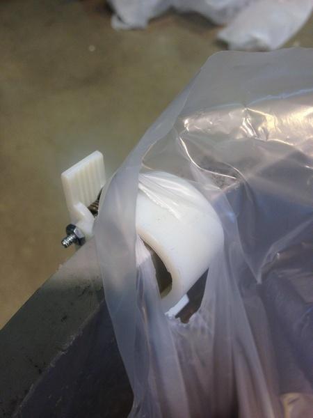
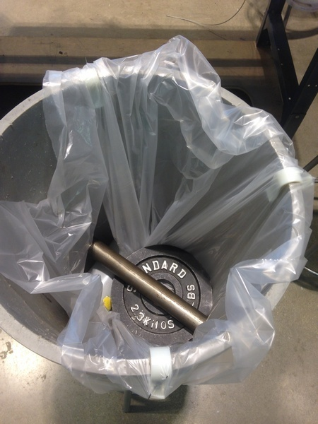

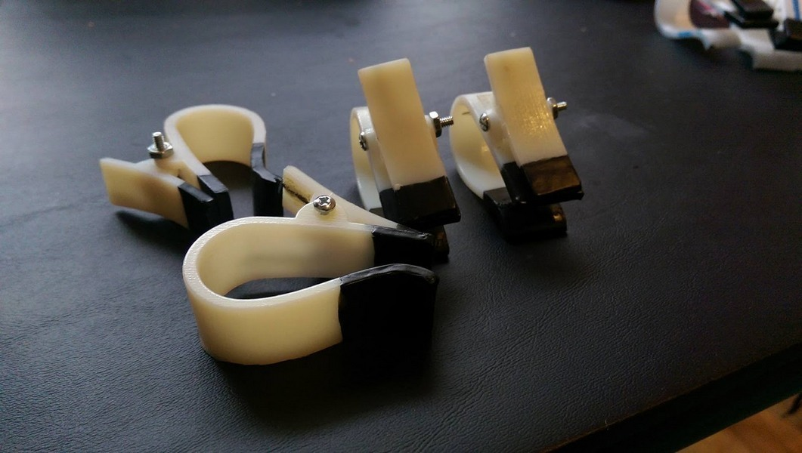
 b.jpg)